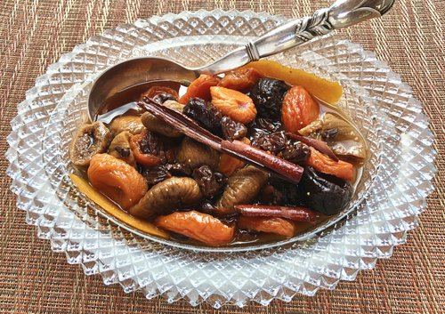

Dried Fruit Compote
Ingredients
- 50g (2oz) dried apple rings
- 50g (2oz) dried apricots
- 50g (2oz) dried figs
- 300ml (1⁄2 pint) unsweetened orange juice
- 300ml (1⁄2 pint) water
- 25g (1oz) hazelnuts
Steps
- Cut the dried apples, apricots,and figs into chunky pieces and place in a bowl.
- Mix together the unsweetened orange juice and water and pour over the fruit in the bowl. Cover and leave to macerate in the refrigerator overnight.
- The next day, spread the hazelnuts out in a grill pan and toast under a low to moderate heat, shaking the pan frequently until the hazelnuts are browned evenly on all sides.